This tutorial was written for Eclipse Helios; Eclipse 3.6, EMF 2.6, OCL 3.0.
In this example you will
You may then
This tutorial assumes that the reader is familiar with generating models using EMF. The reader is referred to Generating an EMF Model.
Other references:
The OCLinEcore editor is not part of the core OCL functionality included in the Eclipse Modeling Tools Package, so although you may have OCL installed and be able to read this tutorial via the Help->HelpContents->OCL Developer Guide, you may not have the OCL examples installed.
An easy way to test whether you have the OCL Examples installed is to right click on a *.ecore file and see whether OCLinEcore (Ecore) Editor appears in the Open With submenu.
If OCL is not installed at all, or if just the examples are not installed, the following installation step will automatically install the OCL Examples and all required projects such as EMF, UML2, MWE2, Xpand and Xtext.
Left-click on Help in the title-bar then left-click on Install New Software... and select the Helios - http://download.eclipse.org/releases/helios update site from the pull-down menu to Work with and be patient while the available updates are identified. Then select OCL Examples and Editors from the Modeling category.
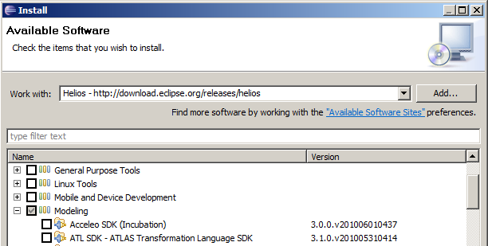Select Next.
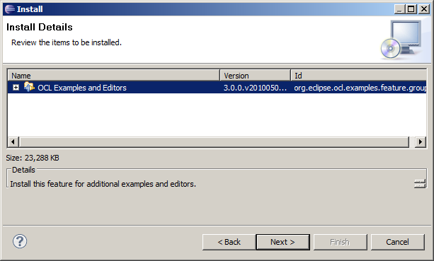Select Next again and read the license agreement. Set to accept it.
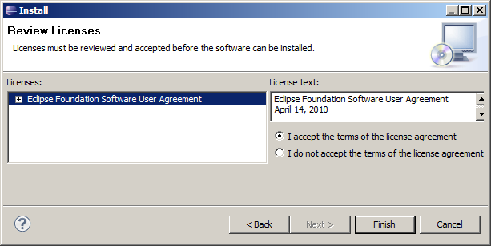Select Finish and be patient while the software is downloaded and installed. Select Restart Now when prompted to do so.
Eclipse Modeling Projects have a large number of classes and so require a large amount of PermGen space on a Sun JVM. If you are using default Eclipse startup settings you are liable to encounter OutOfMemoryExceptions. Therefore follow the advice in How do I start Eclipse and set XX:PermSize to at least 64M, either on your Eclipse command line, or your Eclipse shortcut or in the eclipse.ini adjacent to eclipse.exe.
Beware that the editor is a very new example; there is validation of name references but not of their types; this is work in progress. Sometimes spurious errors are displayed, which may go away with a Save, but may require an editor close and reopen.
There are many different (compatible) ways to create and edit Ecore models.
All the above approaches update a *.ecore file, so the user is free to choose whichever editing approach is best suited for the planned changes.
We will first create a new project for this example; so invoke File->New->Project... (left-click the File menu, then left-click New, then left-click Project...).
In the New Project dialog left-click to expand Eclipse Modeling Framework, then left-click to select Empty EMF Project.
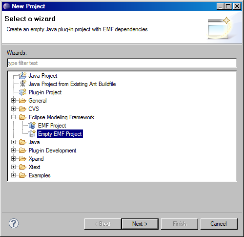Left-click on Next and in the New Empty EMF Project dialog type Tutorial as the project name.
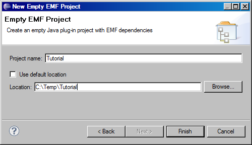Left-click on Finish.
We will now create a new model for this example; so right-click on the model folder in the Tutorial project to define the target folder and pop-up the context-sensitive menu and select New->Other....
In the New dialog left-click to expand Eclipse Modeling Framework, then left-click to select Ecore Model.

Left-click on Next and then in the New Ecore Model dialog type Tutorial.ecore as the file name.

Left-click on Finish; The Sample Ecore editor for Tutorial.ecore opens showing a tree view of a single unnamed EPackage.
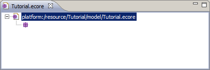Close the editor by left-clicking the cross on the editor tab.
We will now open the Ecore model using the OCLinEcore text editor and provide some initial content.
Right-click on the Tutorial.ecore file to pop-up the context-sensitive menu and select Open With->OCLinEcore (Ecore) Editor.
The first time you open a file in the project with one of the Xtext-based editors, you will be asked
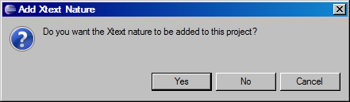Click Yes to avoid answering the question in the future.
An almost empty text file appears showing the package keyword and an empty name.
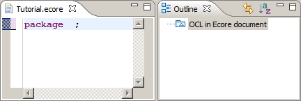Now type (or cut and paste) the following text into the editor and save the file.
import ecore : 'http://www.eclipse.org/emf/2002/Ecore#/';
package tutorial : tut = 'http://www.eclipse.org/mdt/ocl/oclinecore/tutorial'
{
class Library
{
attribute name : String;
property books#_'library' : Book[*] { composes };
property loans : Loan[*] { composes };
property members#_'library' : Member[*] { composes };
}
class Book
{
attribute name : String;
attribute copies : Integer;
property _'library'#books : Library;
}
class Member
{
attribute name : String;
property _'library'#members : Library;
}
class Loan
{
property book : Book;
property member : Member;
attribute date : ecore::EDate;
}
}
The syntax is fairly self explanatory, emulating OMG specifications with 'name : type[multiplicity] { properties }'.
The import URI is the URI of a Package, so in the example the http://www.eclipse.org/emf/2002/Ecore is the URI of the model, # is the fragment separator and / is the path to the Package at the root of the XMI document.
Completion assist (Ctrl Space) may be used for syntax assistance.
In order to discover a syntax for which completion assist is insufficient, you may use the Sample Ecore Editor on a test file to create the kind of Ecore element that you require, and then open the test file with the OCLinEcore editor to see the corresponding textual syntax.
The example meta-model models a library with members and books and loans of books to members. It may be viewed graphically using the Ecore Tools (not part of this tutorial).

The OCL types String and Integer map to EString and EBigInteger in Ecore.
At this point a corresponding EMF tutorial would show how to generate Java code for the meta-model and for an editor for the meta-model. Here we are concerned with modeling, so we will continue with the models alone.
In the outline, right-click on Library to show the context-sensitive menu and then left-click on Create Dynamic Instance... to start to create a new Dynamic Model with Library at its root.
(If the Outline is not visible, it may be made visible by Window->Show View->Outline.)
(If Library is not visible in the Outline, left-click on OCLinEcore Document to expand it, then on tutorial to expand it.)
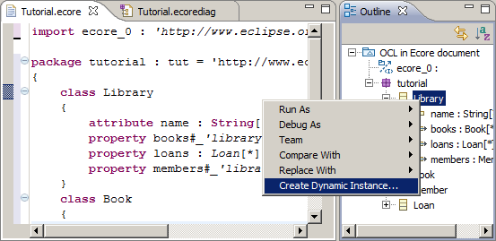In the Create Dynamic Instance dialog select Tutorial/model as the parent folder for the Tutorial.xmi dynamic model instance and left-click Finish.

The model is automatically opened for editing using the Sample Reflective Ecore Editor, which gives a tree-like presentation of the model. The properties of each node can be seen in the Properties View.

(If the Properties View is not visible, right-click within the editor and left-click on Show Properties View.)
From the right-button menu for Library use New Child->Books Book twice, use New Child->Loans Loan once and New Child->Members Member three times to populate the model with two books, one loan and three members.
Left-click to select each of the Books and Members in turn and enter a name such as b1 or m2 using the Properties View. Specify that b1 has one copy and that b2 has 2 copies.

The books and members now have distinct titles in the outline. When you left-click to select the Loan and edit its Book and Member attributes, the associated pull-down has meaningful entries. Specify that the Loan is for b2 by m3.
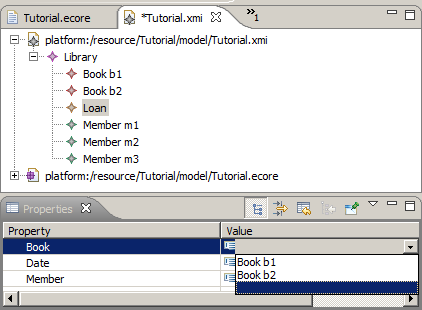The configuration so far is simple, three members, two books and one loan. We can validate that this by right-clicking on the Library node, and left-clicking to Validate Library and all its children.
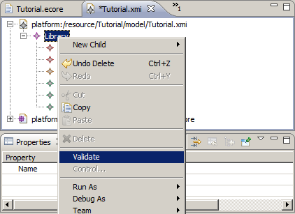Since the model is so simple, it is difficult to have anything wrong; most of the illegal modeling options such as a Loan composing rather than referencing a Book are prevented by the Editor's enforcement of the meta-model.
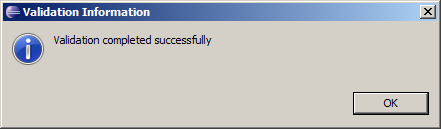(If you have an error at this point, a Details button will lead you to some diagnostics that may clarify the problem. Pasting the following XMI should also resolve an entry problem.)
<?xml version="1.0" encoding="ASCII"?> <tut:Library xmi:version="2.0" xmlns:xmi="http://www.omg.org/XMI" xmlns:xsi="http://www.w3.org/2001/XMLSchema-instance" xmlns:tut="http://www.eclipse.org/mdt/ocl/oclinecore/tutorial" xsi:schemaLocation="http://www.eclipse.org/mdt/ocl/oclinecore/tutorial Tutorial.ecore"> <books name="b1" copies="1"/> <books name="b2" copies="2"/> <loans book="//@books.1" member="//@members.2"/> <members name="m1"/> <members name="m2"/> <members name="m3"/> </tut:Library>
We will now create two further identical loans of b2 by m3. This may conveniently be performed by left-clicking to select the existing loan, typing Ctrl-C to copy it, left-clicking to select the Library as the new parent, then typing Ctrl-V to paste it on the library. Repeat so that there are three identical loans.
Validating the library should still be successful, although it is clearly wrong for the two copies of b2 to participate in three loans.
The semantic constraint that a book cannot be borrowed more times than there are books is a simple example of a constraint that cannot be expressed by simple multiplicities; a more powerful capability is required that may potentially require evaluation of functions of almost arbitrary complexity. The Object Constraint Language provides this capability.
The constraint can be realized as an invariant on a book that specifies that that (the size of the (selection of loans involving the book)) is less than or equal to (the number of copies of the book).
Close the Tutorial.xmi editor before modifying its meta-model. (Beware that a wide variety of unpleasant errors can occur if the meta-model is changed after the model is loaded.)
Add the invariant shown below to the meta-model.
class Book
{
invariant SufficientCopies:
library.loans->select(book=self)->size() <= copies;
attribute name : String;
attribute copies : Integer;
property library#books : Library;
}
The required semantic is expressed by the SufficientCopies invariant constraint for a Book. For a valid model the SufficientCopies invariant must always be true.
If you reopen the Tutorial.xmi editor and invoke Validate for the Library, you will now get a validation error. Left click Details for details.

The Details identifies that the SufficientCopies invariant is not satisfied for the b2 book.
If you now change the first loan so that b1 is borrowed and then validate again, the problem is resolved. It is alright for m3 to borrow the one copy of b1 and the two copies of b2.
Before introducing a further constraint of no duplicate loans, we will show how OCL expressions can be exercised. OCL is a very powerful compact language; the example hides a loop over all the loans. More complex examples may easily involve three or four levels of hidden loops on a single line, but may equally easily have simple errors. It is therefore helpful to simplify expressions and use helper operations and properties to modularise them. These may then be exercised using the OCL Console.
The OCL Console supports interactive execution of an OCL expression in the context of a model instance.
To make the OCL Console visible, first make the Console view visible by Window->Show View->Console. Then right click on the Open Console and left click on Interactive OCL.
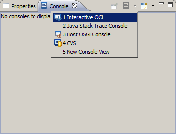Alternatively, you can just invoke Show OCL Console from the right button menu within the Sample Ecore Editor or Sample Reflective Ecore Editor.
The Interactive OCL console comprises two main text panes. The upper pane displays results. The lower pane supports entry of queries.
Left-click to select the Library in the Tutorial.xmi as the context for a query, and then type books followed by a new line into the lower pane of the console.
The result of evaluating this query for the Library is shown.
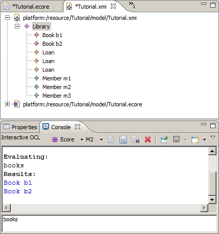Substantial OCL queries spanning many lines may be entered and so the cursor up and cursor down keys move across lines. If you want to access an earlier query, you may use the Page Up or Page Down keys to save typing them again.
You can examine the execution of the earlier query by selecting each of the books in turn and executing library.loans->select(book=self), to see that b1 has one Loan and b2 two.
(Practising queries in this way is particularly important with MDT/OCL 3.0.0 since validation of expression types is not performed in the editor. You may therefore enter erroneous OCL without warning from the editor and get an OclInvalid result from execution. Step-wise practice can resolve this. The next MDT/OCL release will have this missing validation.)
We will now introduce some helper attributes and operations to make the OCL clearer and provide a richer meta-model API. Close the Tutorial.xmi editor and modify the meta-model to include the derived loans property and the helper operation isAvailable(). Simplify the invariant to use the derived property.
class Book
{
invariant SufficientCopies:
loans->size() <= copies;
attribute name : String[?];
attribute copies : Integer[?];
property loans : Loan[*] { derived,volatile }
{
derivation: library.loans->select(book=self);
}
property _'library'#books : Library[?];
operation isAvailable() : Boolean[?]
{
body: loans->size() < copies;
}
}
Note that the derived property must also be volatile to avoid problems when a model is loaded but has no content.
The derived property is visible in the Properties view.
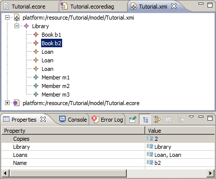The helper operation can be evaluated in the Console view by selecting book b2 and typing isAvailable() for execution.
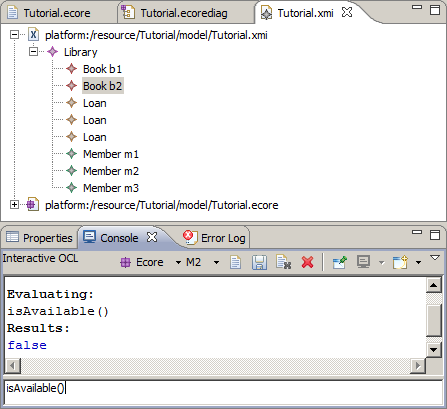We will now add further helpers and constraints to enforce an at most two loans per member policy and to require loans to be unique.
(Don't forget to close Tutorial.xmi while changing its meta-model.)
class Member
{
invariant AtMostTwoLoans:
loans->size() <= 2;
invariant UniqueLoans:
loans->isUnique(book);
attribute name : String[?];
property _'library'#members : Library[?];
property loans : Loan[*] { derived,volatile }
{
derivation: library.loans->select(member=self);
}
property books : Book[*] { derived,volatile,!unique }
{
derivation: loans->collect(book);
}
}
The additional books property may be evaluated in the OCL Console to show which books each member has on loan. The property may also be seen in the Properties view.
Select the library again and invoke Validate from the right button menu. There are now two validation failures.

We have shown how OCL may be used to enrich Ecore meta-models, how model instances can be created and validated and how expressions can be evaluated, all without generating any Java code.
Exactly the same facilities are available if you do generate Java code and as a result you gain some speed benefits. In the MDT/OCL 3.0.0 (Helios) release the generated Java code for OCL is interpreted and so the speed gains occur only for the EMF models. In a future release, the OCL will be converted to Java giving significant speed improvements.
Generating Java code is exactly the same as for any other EMF project; with one important difference; you must set Operation Reflection to true.
Select the Tutorial.ecore file and invoke New->Other... from the right button menu and select Eclipse Modeling Framework and EMF Generator Model.

Select Next.
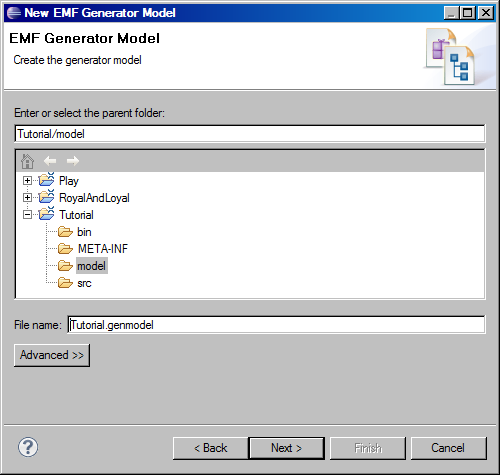Select Next.

Select Next.

Select Load and Next.
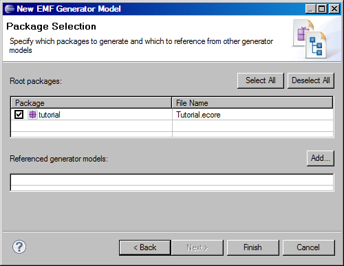Select Finish.
The Tutorial.genmodel editor opens.

Most of the default settings are suitable. The one that is not is highlighted. Select the root Tutorial and scroll down the Properties view and set Operation Reflection to true.
You may now invoke Generate Model Code from the right button menu of either Tutorial to generate Java models that invoke OCL.

You can check that the OCL appears in your Java by looking at TutorialValidator.java where you'll find the OCL expression as a String awaiting compilation at run-time, and the validate invocation that triggers that compilation and execution.
protected static final String MEMBER__AT_MOST_TWO_LOANS__EEXPRESSION = "\n" + "\t\t\tloans->size() <= 2";
public boolean validateMember_AtMostTwoLoans(Member member, DiagnosticChain diagnostics, Map<Object, Object> context) {
return
validate
(TutorialPackage.Literals.MEMBER,
member,
diagnostics,
context,
"http://www.eclipse.org/emf/2002/Ecore/OCL",
"AtMostTwoLoans",
MEMBER__AT_MOST_TWO_LOANS__EEXPRESSION,
Diagnostic.ERROR,
DIAGNOSTIC_SOURCE,
0);
}
Similarly in BookImpl you will find the declaration of a cached delegate and the dynamic invocation that provokes the first time compilation.
protected static final EOperation.Internal.InvocationDelegate IS_AVAILABLE__EINVOCATION_DELEGATE = ((EOperation.Internal)TutorialPackage.Literals.BOOK___IS_AVAILABLE).getInvocationDelegate();
public boolean isAvailable() {
try {
return (Boolean)IS_AVAILABLE__EINVOCATION_DELEGATE.dynamicInvoke(this, null);
}
catch (InvocationTargetException ite) {
throw new WrappedException(ite);
}
}
The OCL expression for the invocation delegate may be found in TutorialPackageImpl.createOCLAnnotations().
addAnnotation
(getBook__IsAvailable(),
source,
new String[] {
"body", "loans->size() < copies"
});
The invariants we have used so far do not contribute to the class API.
If you want to have fine grain control of which validations are performed, perhaps because in some incremental context not all are appropriate, you may use the operation form of an invariant.
class Book
{
operation sufficientCopies(diagnostics : ecore::EDiagnosticChain,
context : ecore::EMap<ecore::EJavaObject,ecore::EJavaObject>) : Boolean
{
body: library.loans->select(book=self)->size() <= copies;
}
attribute name : String;
attribute copies : Integer;
property library#books : Library;
}
Note that the operation must have a Boolean return (true for valid) and diagnostics and context arguments.
To illustrate how to work with the OCL and Ecore as models we have
To use OCL and Ecore as generated Java models we have
Copyright (c) 2010 E.D.Willink and others. All Rights Reserved.